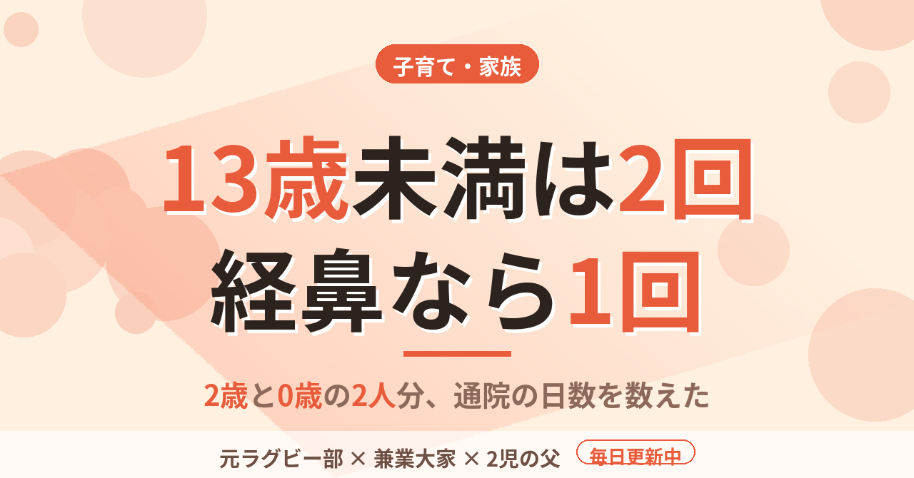

子育て・家族13歳未満は2回、経鼻なら1回。2歳と0歳の父がインフルワクチンの回数を数えた
2歳と0歳の2人分で、インフルエンザの予防接種に何回通うことになるのか。数えようとして、僕は回数がどう決まるのかを知らなかったことに気づいた。今年は流行も早い。調べたことを順に並べておく。
2026年は流行入りが1か月以上早かった
インフルエンザの流行入りは、全国の定点医療機関1か所あたりの患者報告数が1.00を超えたときとされる。今季は8月下旬の集計でこの線を超え、8月24日〜30日の週には1.76になった。前のシーズンの流行入りは2025年10月3日の発表だったので、1か月以上早い。今の調査方法になった1999年以降では、2009年に次ぐ早さだという。
9月28日〜10月4日の週には1か所あたり11.35人となり、注意報の目安とされる10人を超えた。前年の同じ時期の約7倍だ。「年末までに打てばいい」という去年までの感覚は、今年は当てはまらない。
13歳未満は2回。量は3歳で変わる
注射で打つHAワクチンは、添付文書で年齢ごとの量と回数が決まっている。生後6か月以上3歳未満は0.25mLを2回、3歳以上13歳未満は0.5mLを2回。間隔はおよそ2〜4週間で、効果を考えると4週間あけるのが望ましいとされている。13歳以上は1回か2回だ。うちの上の子は2歳なので、注射なら0.25mLの側に入る。
つまり生後6か月を過ぎていない0歳は、そもそも対象にならない。2人とも対象なら注射は合計4回で、2回目まで4週間あけると1か月以上かかる。流行が早い年は、そのぶん逆算の始点も早くなる。
鼻に噴霧する1回のワクチンもある
2歳以上には、鼻に噴霧するタイプ（経鼻弱毒生インフルエンザワクチン）という選択肢もある。こちらは1回で済む。ただし2歳未満は対象外なので、0歳には使えない。
子どものインフルエンザ予防接種は、定期接種ではなく任意接種だ。費用の助成は自治体ごとに違う。たとえば東京都港区の今季の案内では、生後6か月から高校3年生相当までが対象で、注射は1回あたり4,500円、経鼻は9,000円を助成し、差額は自己負担としている。同じ年度に両方の助成は受けられず、期間は2027年1月31日まで。経鼻のワクチンは有効期限の関係で1月22日以降は打てないとも書かれている。助成の有無も金額も期限も、住んでいる市の案内を見るのが先になる。
父として数えたのは通院の日数だった
2人分を数えると、上の子が注射なら2回、経鼻なら1回。下の子は生後6か月を過ぎていれば注射で2回。合計は3回か4回になる。同じ日に2人をまとめて連れて行けば、通う日は2日で済む。2回目の日付も1回目の時点で決めておけば、4週間後の在宅の日に合わせられる。下の子がまだ生後6か月に届いていなければ、その子のぶんは来季に回ることになる。
どちらのワクチンが合うかは小児科で相談して決めることで、僕が効果を比べて書くことではない。父親の側で決められるのは、在宅の日をどこに置くか、どちらが連れて行くかという段取りのほうだ。回数は決まっている。決めるのは日付と、送り迎えの担当である。
---
児童手当の申請期限や育休の給付、通園制度など、妊娠から小学校入学までの制度とお金を、時期の順に14項目の表にまとめた。我が家で取りこぼしかけた3つの落とし穴も入れている（有料・100円）。
この記事は note にも掲載しています。